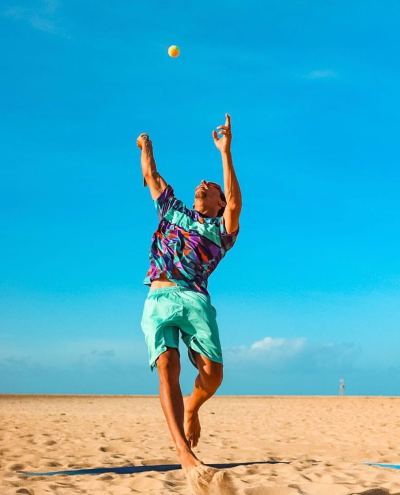
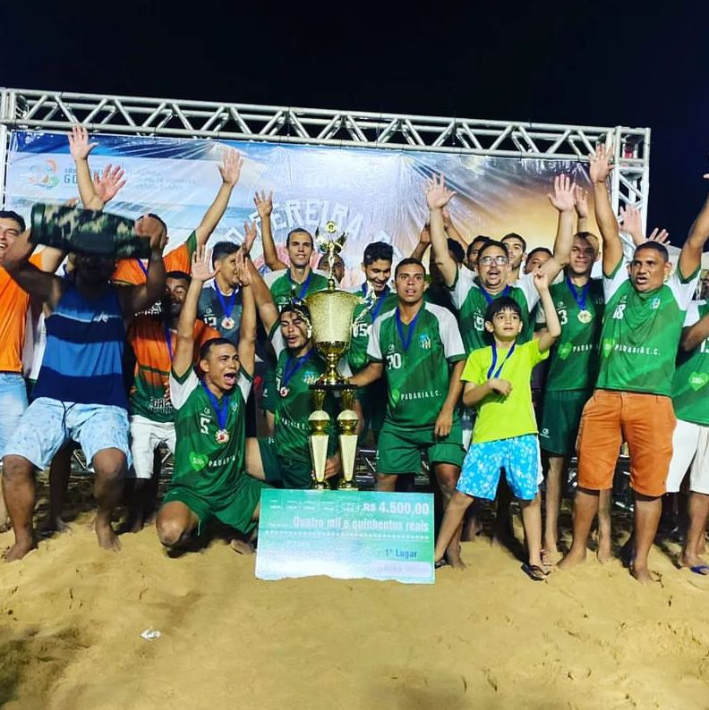
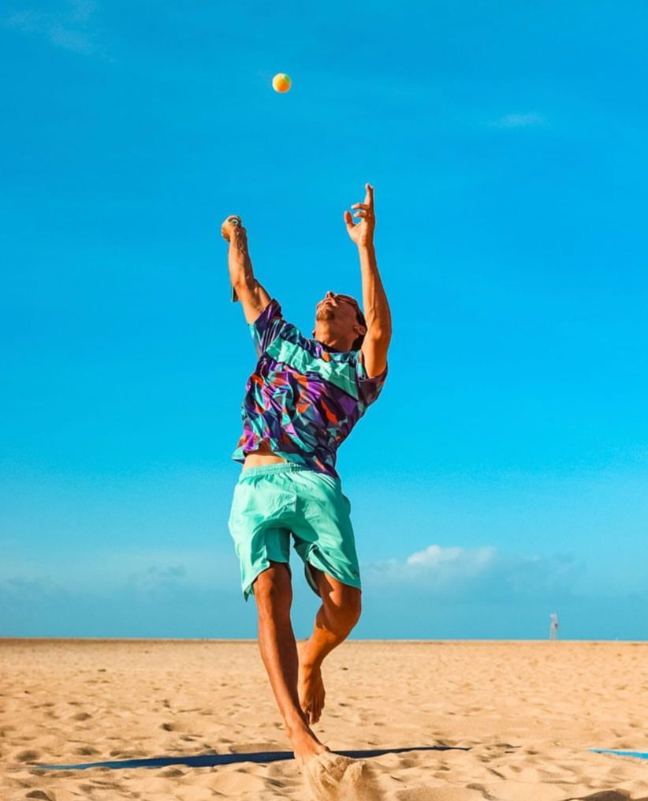
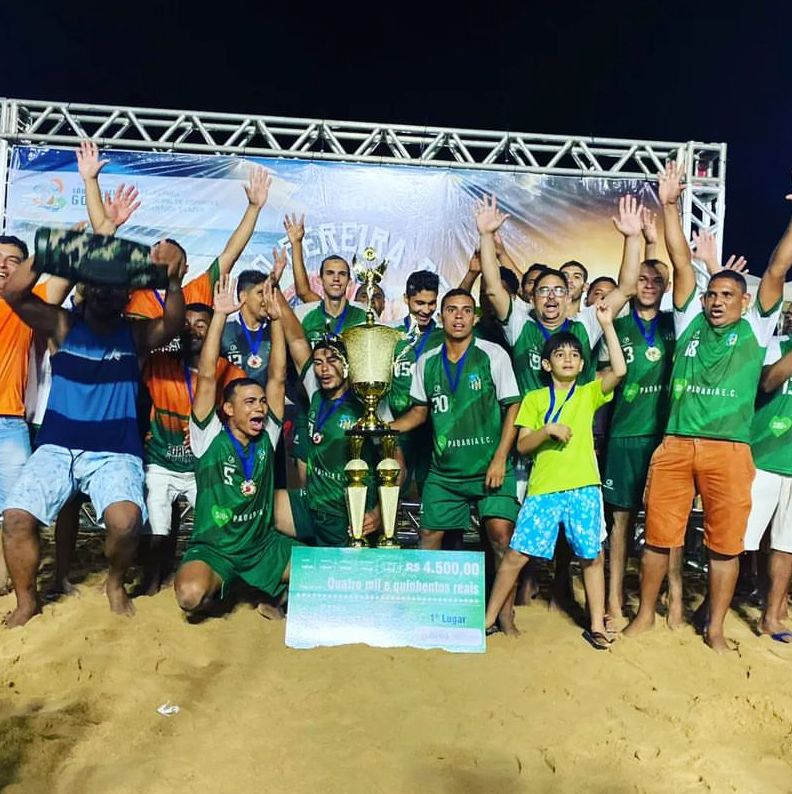

|  |  |
 |
Estamos localizados em uma das cidades mais gostosas do Brasil!!
São Miguel do Gostoso é um município brasileiro do estado do Rio Grande do Norte. Sua população, conforme estimativas do IBGE de 2021, era de 10 441 habitantes.
Cinema
O destino está consolidado no mapa do cinema nacional, com a exibição de um festival único em todo o Brasil, a Mostra de Cinema de Gostoso, que exibe filmes a céu aberto em uma sala de cinema montada nas praias da cidade
Esporte
A cidade é famosa pelos seus ventos fortes e paralelos ao litoral na maior parte do ano, que permitem esportes náuticos sem o risco de que os praticantes sejam levados para longe da costa. Além dos bons ventos a temperatura da água é sempre agradável, mesmo no "inverno". Diversas escolas e clubes de kitesurf, windsurf, beach tênis, vôlei, futsal, futvôlei, beach soccer e karatê se espalham pela cidade atraindo pessoas de todo o mundo. Os ventos alísios permitem que os esportistas façam longos passeios e campeonatos desde a cidade até o Ceará.
|  | |
 |
Gastronomia
Os esportistas trouxeram a gastronomia na bagagem. Muitos restaurantes foram abertos, mas privilegiam os jantares, especialmente na famosa Rua da Xepa. Poucos restaurantes abrem para o almoço na dentro da cidade. Esta refeição pode ser apreciada em outros pontos como na Praia de Tourinhos, com muitas barracas na areia ou em alguns poucos restaurantes que estão próximos aos kite-centers.
Fatos interessantes
A população local, seja de nativos ou de "forasteiros" adora assistir o pôr do sol. Muitas pessoas vão até a praia, com crianças e cachorros, para apreciar este momento. Em alguns pontos é possível ver o sol se pondo no mar, algo incomum na maior parte do litoral do Brasil.